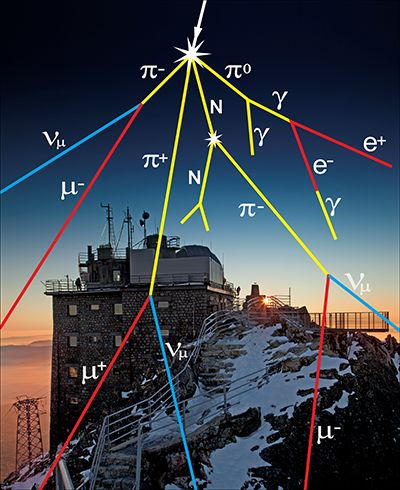
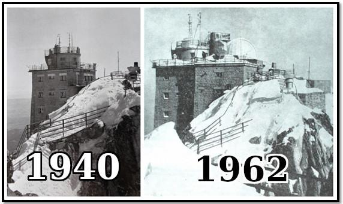
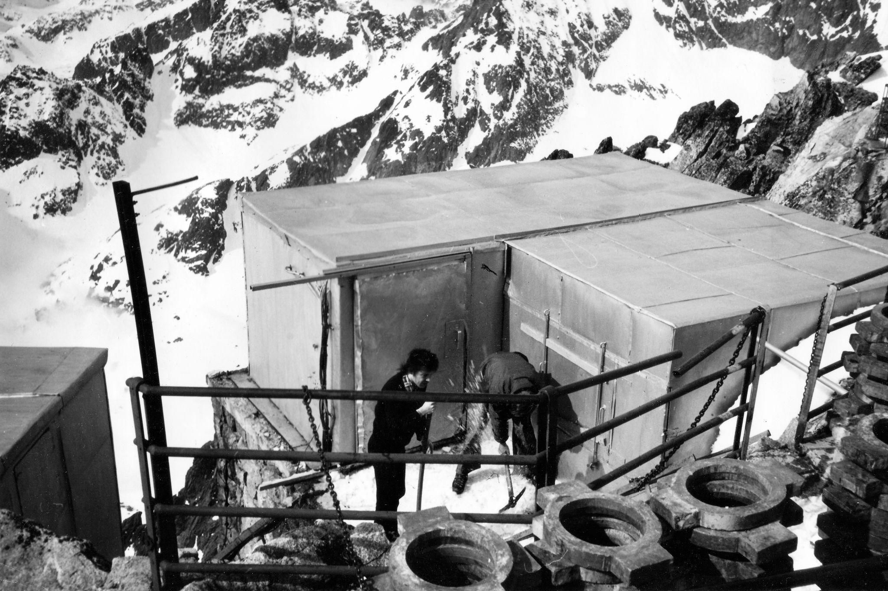
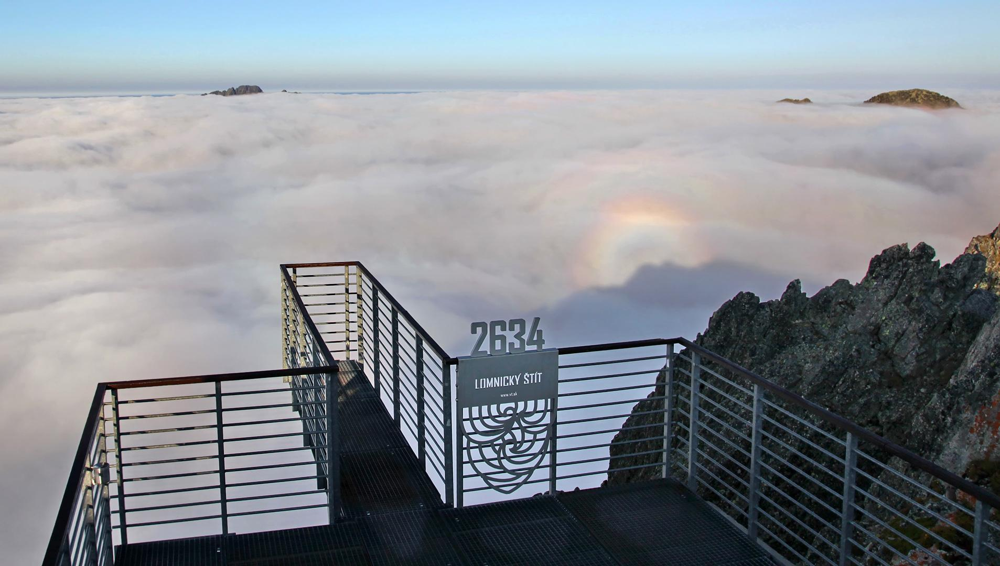
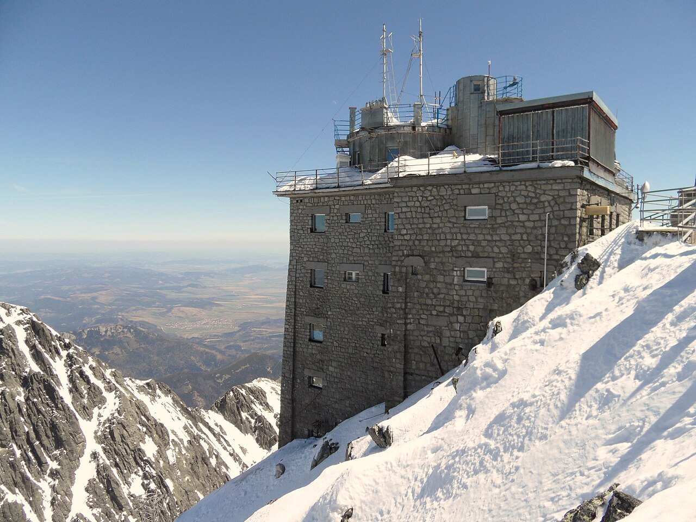
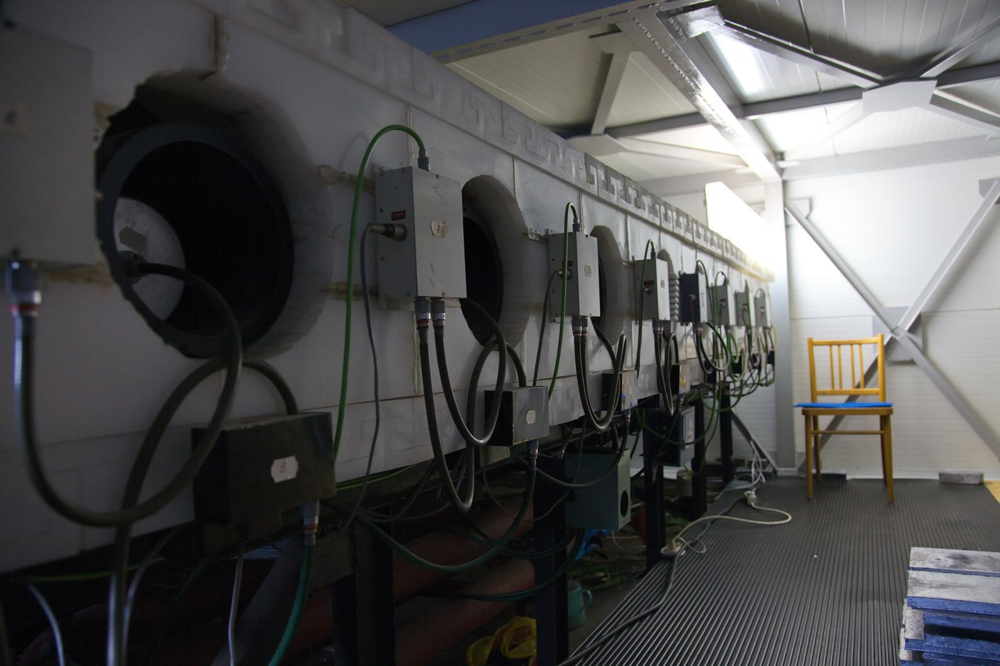
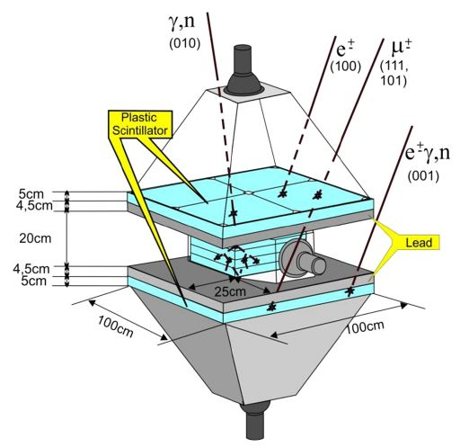
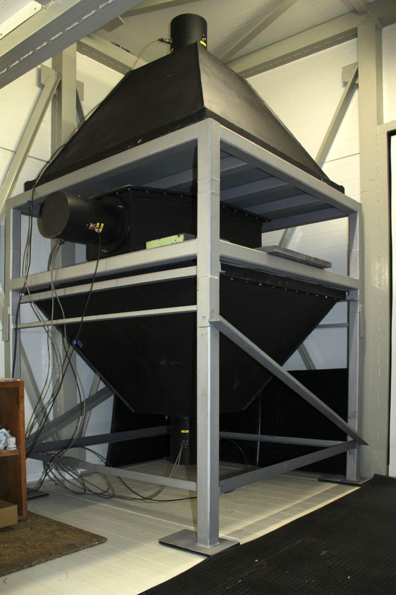
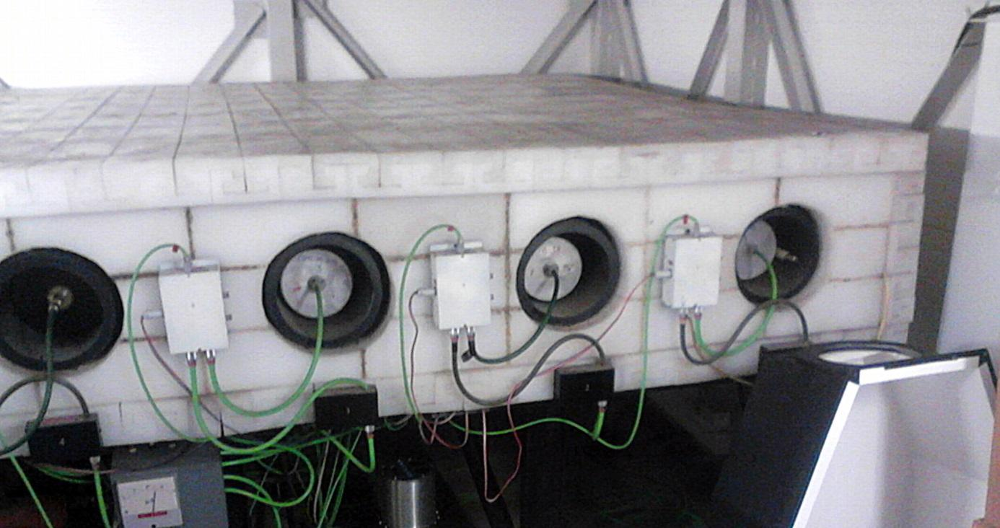

Photographic emulsions were first exposed to cosmic rays on the summit in the winter of 1950, in the original cable-car building. A room for cosmic ray experiments was fitted out there in 1954–1955, and in 1957, during the International Geophysical Year, work began on an extension built for the purpose, completed in 1962. Cosmic ray intensity has been recorded on the summit ever since; the present 8NM64 neutron monitor has measured continuously since December 1981, today at one-second resolution.
2634 m
Altitude a.s.l.
1957
Laboratory on the summit since
3.84 GV
Vertical cut-off rigidity
Why this mountain
Four considerations make this site suitable for cosmic ray research, and they correspond to the phases of the work carried out here.
The first belongs to the period in which the measurements began. In the early 1950s no accelerator could deliver particles at the energies characteristic of the primary cosmic ray flux; the first machines to reach the GeV range became operational only during that decade, and their maximum energies remained far below the upper end of the cosmic ray spectrum. For the investigation of nuclear interactions at such energies, the radiation generated in the atmosphere above a high mountain was the most accessible source of suitable particles. This is the context of the photographic emulsions exposed at Lomnický štít: the plates registered the tracks of charged particles traversing the emulsion, and the geometry, grain density and range of those tracks yielded the nuclear physics sought.
The second is altitude. Primary cosmic rays do not reach ground level. A primary particle — predominantly a proton, of galactic or solar origin — undergoes a nuclear interaction with an atmospheric nucleus at high altitude, and the secondaries thus produced interact in turn, generating a cascade of neutrons, protons, electrons, positrons, muons and gamma rays that develops downwards and attenuates with increasing atmospheric depth. A detector at sea level registers the residual tail of this cascade; at 2634 m it is situated much closer to the maximum. The resulting count rate is substantially higher, so that a small variation in the primary flux is resolved as a signal rather than lost in statistical fluctuation.

A cosmic ray shower over the observatory. One primary particle arrives; a cascade of secondaries reaches the roof.Department of Space Physics, IEP SAS · low-resolution extract, to be redrawn
The third is magnetic. The geomagnetic field deflects charged particles below a threshold that depends on the position of the observer — highest at the equator, lowest at the poles. At Lomnický štít this threshold, the vertical cut-off rigidity, is 3.84 GV, low enough that the station responds to a substantial part of the lower-energy population which stations at higher cut-off never record. High altitude and a low cut-off together are what distinguish the location.
The fourth is practical. The mountain is already there, with a building on it, power, a cable car and staff. A permanent service operates at the station year-round to keep the instruments running and the data clean, because an instrument that stops for a week in a blizzard leaves a gap in the record that cannot be filled afterwards.
A short history
The story of cosmic ray research at Lomnický štít begins in the 1950s, when nuclear and experimental physics were expanding rapidly throughout the world.
Lomnický štít was a natural choice: the second highest mountain in Czechoslovakia, with a permanently staffed building and existing infrastructure already in place. A room for cosmic ray experiments was set up in that original building in 1954–1955, and in 1957, as part of the International Geophysical Year, construction began on an extension to the original cable-car building; the primary aim was the measurement of cosmic rays, with observation of the solar corona following later. The first published paper devoted to cosmic ray monitoring appeared in 1960, written by Juraj Dubinský, Pavel Chaloupka and Tadeusz Kowalski under the title “Priebeh intenzity kozmického žiarenia v rokoch 1958–1959” (The course of cosmic ray intensity in 1958–1959), Matematicko-fyzikálny časopis 10(4), 247–253.

The Lomnický štít summit in 1940 and in 1962 — the original building, and the original building with the extension.Rights holder being confirmed · low-resolution composite, originals requested
Winter 1950
The summit as an instrument, before any instrument
Long before a detector was installed here, the mountain itself was the apparatus. In the winter of 1950, physicists from the Institute of Nuclear Physics of the Academy of Sciences and the Institute of Physics of Charles University in Prague exposed photographic emulsions on the summit, in the original cable-car building, and let cosmic rays write their own tracks into them. The first results were published in Nature on 8 December 1951, in two papers (Pernegr, 1951; Tomášková, 1951).
The first, by J. Pernegr, measured the mean lifetime of the muon. Plates were exposed for 42 days at two stations at once: at Skalnaté pleso, 1780 m, with no absorber, and at the top of Lomnický štít, 2640 m as the paper gives it, under 12 cm of lead — chosen because it stops particles as effectively as the 85 g/cm² of air lying between the two stations. The number of muons recorded in equal volumes of emulsion at the two stations is compared, and the ratio gives the mean range before decay. With the muon rest mass determined from the tracks themselves, by grain counting and Coulomb scattering, this yields τ₀ = (2.3 ± 0.3) × 10⁻⁶ s, in good agreement with the value from direct measurements, (2.15 ± 0.1) × 10⁻⁶ s.
The second, by L. Tomášková, tested whether star-producing radiation shows a transition effect — whether adding absorber above the emulsion first increases the number of nuclear disintegrations before absorbing them away. Six batches of plates were exposed for 45 days: one without any absorber, the others under layers of lead increasing in thickness from 1 to 5 cm. The frequency of stars reached a well-pronounced maximum under about 20 g/cm² of lead, clearly above the postulated exponential absorption curve.
1954–1955
An experimental room
A room for cosmic ray measurements is set aside in the original building.
1957–1962
The laboratory extension is built
Construction begins in 1957 on an extension to the original cable-car building, with the measurement of cosmic rays as its declared purpose; observation of the solar corona follows later. Work continues until 1962. The start of construction in 1957 is the founding date of the laboratory, and the International Geophysical Year is what brings Lomnický štít into the network of world geophysics. Measurement of cosmic ray intensity itself begins in January 1958, as part of the Czechoslovak IGY programme, at first in two-hour intervals following the IGY Committee’s guidelines.
1968
Routine archiving
Hourly data begin to be archived routinely on 1 February 1968. The monitor of that time counts about 9 × 10⁴ particles per hour.
1970
A more sensitive instrument, in the wrong place
A four-tube IQSY monitor of the NM64 type (4NM64) replaces the original and raises the counting rate to about 8 × 10⁵ per hour. It stands outside the main building until 1981, and the position proves unsuitable: exposed, hard to service, thermally unstable. Today the Skywalk observation deck occupies the spot.

The measurement hut outside the main building, which held the monitor until 1981.Department of Space Physics, IEP SAS · date and photographer to be confirmed

The same spot today: the Skywalk observation deck stands where the monitor once did.Department of Space Physics, IEP SAS
December 1981
The 8NM64 goes into the roof house
The eight-tube monitor begins measuring inside the measurement house on the roof of the building, with about twelve tonnes of lead in its producer. The counting rate reaches roughly 1.6 × 10⁶ per hour, some eighteen times that of the first instrument, and it is that statistical accuracy which makes short-lived events visible at all. This is the start of the continuous public record.

The observatory building, with the measurement building on its roof at the right. The neutron monitor stood there from 1981 until 2012, when the building was replaced.Bubamara / Wikimedia Commons · CC BY-SA 3.0
At every change
Kept comparable
When one monitor replaced another, both were run side by side for several months so that the recorded intensity could be normalised back to the original measurements of 1958. The series is continuous in more than the trivial sense.
3 June 1982
Solar neutrons
During the large solar flare of 3 June 1982, neutrons produced at the Sun are detected at ground level for the first time. The detection is made at Jungfraujoch, where neutron monitor data are available at one-minute resolution. At Lomnický štít the data resolution is then five minutes, but the statistical accuracy of the measurements, a consequence of the high elevation of the site, is sufficient to confirm the occurrence of the event.
Being electrically neutral, solar neutrons are unaffected by the interplanetary and geomagnetic fields and propagate rectilinearly from the site of acceleration; their arrival therefore carries information on the acceleration process itself, unmodified by propagation effects. Two constraints nevertheless limit their observation at ground level: the finite neutron lifetime, which depletes the flux in transit, and attenuation in the atmosphere, which the surviving neutrons must traverse. Detection consequently requires a station at high elevation, a flare favourably situated on the solar disc, and the observing site in daylight at the time of arrival.
2001
Neutron multiplicities
Experiments measuring neutron multiplicity begin in part of the monitor. The distribution of intervals between successive events differs during ground-level enhancements, because solar particles have a softer energy spectrum than galactic ones — so the monitor can say something about the spectrum of an event, not only its size.
June 2012
A new measurement house
The original hut is replaced under the project Space Research Centre: Effects of Space Weather – Phase Two. The rebuild reduces energy consumption and creates room for further instruments. The internal steel structure is designed with the aid of wind-load simulations for speeds of up to 200 km/h; the walls and floor are sandwich panels insulated with mineral wool, and the ceiling above the neutron monitor is lowered.
2014
SEVAN
Continuous monitoring begins with a second, complementary instrument. SEVAN — Space Environment Viewing and Analysis Network — was developed at the Yerevan Physics Institute within the framework of the International Heliophysical Year (IHY-2007) and deployed as a standardised detector at stations worldwide; Lomnický štít joined the network in 2014, at the maximum of solar cycle 24, and has operated its unit continuously since. From the pattern of coincidences between its three scintillator layers, SEVAN classifies the incoming particles into neutral, charged and muon components — a discrimination the neutron monitor cannot provide.
August 2020
Thunderstorm gamma-ray spectrometry
A Georadis RT-56 large-volume scintillation spectrometer is installed to measure the energy spectrum of high-energy photons during thunderstorms. The instrument places Lomnický štít in GASTRON, a network of thunderstorm gamma-spectrometry stations that also includes Milešovka and Poledník in Czechia.
On 12 September 2021 the station recorded a strong thunderstorm ground enhancement, measured simultaneously by the RT-56 spectrometer, by SEVAN’s coincidence channels and by the electric field mill — the spectrometer supplying the photon spectrum that the other instruments cannot provide (Šlegl et al., 2022).
The site is suited to this work because it sits directly in the thunderclouds: extreme electric fields are measured here during storms, and Lomnický štít is one of the few high-altitude stations in the world that operate both a gamma detector and a neutron monitor.
2025
The series becomes citable
Forty-two years of measurements are published as a citable dataset: hourly data from December 1981 to July 2023, and one-minute data from January 2001 to July 2023. The data themselves have long been public — through our own web interface and through NMDB — but this is the first time the whole continuous series has been released in a single archived, referenceable form (Kisvárdai et al., 2025).
References
Kisvárdai, I., Štempel, F., Randuška, L., Mackovjak, Š., Langer, R., Strhárský, I., Kubančák, J. (2025). Analysis of 42 years of cosmic ray measurements by the neutron monitor at Lomnický štít observatory. Earth and Space Science, 12(1), e2024EA003656. doi:10.1029/2024EA003656
Pernegr, J. (1951). Determination of the mean life-time of μ-mesons. Nature, 168, 1004. doi:10.1038/1681004a0
Šlegl, J., Langer, R., Brunclík, T., Mašek, P., Strhárský, I., Ambrožová, I., Chum, J., Ploc, O. (2022). Spectrometry of high-energy photons on high mountain observatory Lomnický štít during thunderstorms. Radiation Protection Dosimetry, 198(9–11), 623–627. doi:10.1093/rpd/ncac108
Tomášková, L. (1951). Transition effect of the star-producing radiation. Nature, 168, 1005. doi:10.1038/1681005b0
Instruments · Lomnický štít
The instruments
Neutron monitor
A neutron monitor does not detect neutrons the way a camera detects light. It is a machine for turning one energetic particle into a countable number of slow ones.
A high-energy neutron or proton from the atmospheric cascade enters the monitor and strikes a lead nucleus in the producer. The collision breaks several lower-energy neutrons out of that nucleus — the signal is now amplified. A polyethylene reflector keeps those neutrons from escaping and, just as importantly, keeps unwanted low-energy neutrons from the surroundings out. A moderator slows the produced neutrons until they are slow enough to be captured in the counter gas. Each capture releases charged particles, which ionise the gas and produce a short electrical pulse. Counting the pulses gives the count rate, and the count rate is the measurement.
The design is standardised worldwide, which is what makes stations comparable to each other and a global network possible. Ours is the eight-tube NM64 configuration, standing inside the measurement house on the roof.

The 8NM64 inside the measurement house. Eight counter tubes in about 12 tonnes of lead, counting without interruption since December 1981.Department of Space Physics, IEP SAS
How the monitor works, in detail
A neutron monitor is not a direct detector of the incident radiation. It is a multiplying target: a single energetic hadron entering the instrument is converted into a number of low-energy neutrons, a fraction of which are subsequently counted (Simpson, 2000; Stoker et al., 2000).
A nucleon from the atmospheric cascade — predominantly a neutron or proton — undergoes a nuclear interaction in the lead producer surrounding the counters. A secondary nucleon of about 200 MeV generates on average some ten evaporation neutrons in such an interaction (Hatton, 1971; Stoker et al., 2000). The producer at Lomnický štít consists of lead cylinders of purity not less than 99.9 %, 25 cm in internal and 35 cm in external diameter and 205 cm in length, one around each counter, their centres spaced 50 cm apart (Chum et al., 2020); the total mass of lead is approximately 12 000 kg. A reflector of 7.8 cm thickness, assembled from interlocking C-profile blocks of additive-free polyethylene manufactured by KOPOS Kolín, retains the evaporation neutrons within the assembly and simultaneously suppresses the entry of neutrons produced in the surroundings. For the standard NM64 reflector thickness of 7.5 cm, the locally produced external contribution amounts to roughly 5 % of the counting rate (Hatton and Carmichael, 1964; Stoker et al., 2000). A polyethylene moderator of 2 cm wall thickness and 24 cm external diameter encloses each counter and reduces the neutrons to thermal energies, at which the capture cross-section is large.
Detection proceeds through the reaction ¹⁰B(n,α)⁷Li, with a Q-value of 2.791 MeV; in 94 % of cases the ⁷Li nucleus is left in an excited state at 480 keV and an energy of 2.31 MeV is imparted to the recoiling ⁴He and ⁷Li nuclei, which ionise the counter gas (Stoker et al., 2000). The counters are proportional tubes of the Soviet SNM-15 type, filled with boron trifluoride in which the ¹⁰B isotope is enriched to more than 90 % of the total boron, corresponding to approximately 2.1 × 10²³ atoms of ¹⁰B in the effective volume of each tube. Owing to the lower purity of the filling gas, tubes of this type are some 15 % less effective than the counters of the standard NM64 (Väisänen et al., 2021). Each counter carries its own amplifier and discriminator, the discrimination level being set individually according to the quality of the tube; a monostable generator then delivers pulses at TTL level and defines the dead time of the system, set to 14 μs.
The overall efficiency for recording a neutron produced in the lead is (5.7 ± 0.6) % for the NM64 design, against (1.9 ± 0.3) % for the earlier IGY monitor — an improvement obtained chiefly through the use of substantially larger counters, and corresponding to a counting rate per unit area of producer higher by a factor of about 3.3 (Hatton and Carmichael, 1964; Stoker et al., 2000). The design, introduced for the International Quiet Sun Year of 1964, has remained the world standard since (Väisänen et al., 2021), and it is this standardisation that renders stations mutually comparable and a global network meaningful. The instrument at Lomnický štít is of the eight-tube configuration, in continuous operation since December 1981, when it replaced the earlier 4NM64 (Kudela and Langer, 2009). The station lies at 49.20° N, 20.22° E, at an altitude of 2634 m and an effective vertical cut-off rigidity of 3.84 GV; the mean barometric pressure is 733.3 mb and the barometric coefficient 0.72 % per mb. The reference level of September 1986, taken as 100 % in the archived series, corresponds to 1 745 200 counts per hour (Kisvárdai et al., 2025).
References
Chum, J., Langer, R., Baše, J., Kollárik, M., Strhárský, I., Diendorfer, G., Rusz, J. (2020). Significant enhancements of secondary cosmic rays and electric field at the high mountain peak of Lomnický Štít in High Tatras during thunderstorms. Earth, Planets and Space, 72, 28. doi:10.1186/s40623-020-01155-9
Hatton, C. J. (1971). The neutron monitor. In J. G. Wilson & S. A. Wouthuysen (Eds.), Progress in Elementary Particle and Cosmic Ray Physics, Vol. X (pp. 3–100). Amsterdam: North-Holland.
Hatton, C. J., Carmichael, H. (1964). Experimental investigation of the NM-64 neutron monitor. Canadian Journal of Physics, 42, 2443–2472. doi:10.1139/p64-222
Kisvárdai, I., Štempel, F., Randuška, L., Mackovjak, Š., Langer, R., Strhárský, I., Kubančák, J. (2025). Analysis of 42 years of cosmic ray measurements by the neutron monitor at Lomnický štít observatory. Earth and Space Science, 12(1), e2024EA003656. doi:10.1029/2024EA003656
Kudela, K., Langer, R. (2009). Cosmic ray measurements in High Tatra mountains: 1957–2007. Advances in Space Research, 44(10), 1166–1172. doi:10.1016/j.asr.2008.11.028
Simpson, J. A. (2000). The cosmic ray nucleonic component: the invention and scientific uses of the neutron monitor. Space Science Reviews, 93, 11–32. doi:10.1023/A:1026567706183
Stoker, P. H., Dorman, L. I., Clem, J. M. (2000). Neutron monitor design improvements. Space Science Reviews, 93, 361–380. doi:10.1023/A:1026508915269
Väisänen, P., Usoskin, I., Mursula, K. (2021). Seven decades of neutron monitors (1951–2019): overview and evaluation of data sources. Journal of Geophysical Research: Space Physics, 126, e2020JA028941. doi:10.1029/2020JA028941
SEVAN
The neutron monitor resolves a single quantity with high statistical precision: the integral rate of the nucleonic component. The SEVAN detector — Space Environment Viewing and Analysis Network — addresses a complementary question, namely the identity of the arriving secondaries. The network was developed within the International Heliophysical Year (IHY-2007) and continues to expand within the International Space Weather Initiative (Chilingarian et al., 2018).
The basic module is assembled from standard 50 × 50 × 5 cm³ plastic scintillator slabs: two identical 100 × 100 × 5 cm³ assemblies enclose a 50 × 50 × 25 cm³ central stack, with two 100 × 100 × 5 cm³ lead absorbers interposed, each layer viewed by a photomultiplier through a light-capture cone. Neutral particles — gamma rays or neutrons — undergo interactions in the thick central scintillator and produce charged secondaries, whereas a neutral traversing the thin upper layer ordinarily yields no signal; a signal in the middle layer without one above it therefore constitutes the neutral signature. The data acquisition registers every logical combination of the three layers: 111 and 101 denote high-energy muons, 010 a neutral particle, 100 a low-energy charged particle stopped in the upper scintillator or first absorber, 110 a higher-energy charged particle stopped in the second absorber, and 001 an inclined charged particle (Chilingarian et al., 2018).
Selection by coincidence substantially enriches each channel: according to simulations, particles registered in combination 010 are more than 85 % neutrons and gamma rays, those in 111 and 101 some 95 % muons, and those in 100 about 81 % electrons and muons. Charged particles are registered with efficiency above 95 % in all three layers; the efficiency of the central layer at 200 MeV reaches 30 % for neutrons and 60 % for gamma rays. The instrument is thereby sensitive to the low-energy electromagnetic component in which thunderstorm ground enhancements are most pronounced — events recorded by the Lomnický štít module since its installation in 2014 (Kudela et al., 2017). Since a neutron monitor distinguishes neutrons from gamma rays and SEVAN does not, the joint operation of both instruments at one site considerably improves neutron–gamma discrimination (Chilingarian et al., 2018).
Lomnický štít constitutes one node of a network of identical detectors at middle and low latitudes, complementary to the high-latitude neutron monitor arrays. Modules at differing latitudes, longitudes and altitudes respond to different populations of primary particles: the neutron flux at Lomnický štít, for instance, is sensitive to solar protons of about 4 GeV, and the combination of stations permits the reconstruction of solar energetic particle spectra (Chilingarian et al., 2018).
The neutron monitor and SEVAN share a measurement room and a pair of Vaisala barometers, a PTU303 with a PTB330 as backup — a configuration that has proved reliable against the weather outside.

How SEVAN sorts the cascade: which of the three layers fire together identifies the particle.SEVAN collaboration · low-resolution extract, to be redrawn

The SEVAN detector shortly after installation at Lomnický štít.Department of Space Physics, IEP SAS
References
Chilingarian, A., Babayan, V., Karapetyan, T., Mailyan, B., Sargsyan, B., Zazyan, M. (2018). The SEVAN Worldwide network of particle detectors: 10 years of operation. Advances in Space Research, 61(10), 2680–2696. doi:10.1016/j.asr.2018.02.030
Kudela, K., Chum, J., Kollárik, M., Langer, R., Strhárský, I., Baše, J. (2017). Correlations between secondary cosmic ray rates and strong electric fields at Lomnický štít. Journal of Geophysical Research: Atmospheres, 122(20), 10700–10710. doi:10.1002/2016JD026439
Electric field mill and gamma spectrometer
Two further instruments extend the station into a laboratory for high-energy atmospheric physics.
The atmospheric potential gradient is measured by a Boltek EFM-100 electric field mill, operated in collaboration with the Institute of Atmospheric Physics of the Czech Academy of Sciences and installed at Lomnický štít on 30 May 2016. The sensor is mounted in inverted position to minimise precipitation noise. Its standard dynamic range of ±20 kV/m was extended to ±165 kV/m by means of external shunt resistors at the input amplifier, since the fields encountered at the site during thunderstorms would otherwise saturate the instrument: the fair-weather potential gradient here exceeds 2.8 kV/m, and absolute values above 140 kV/m have been recorded during storms (Chum et al., 2020). The instrument is taken out of operation in winter, when icing would endanger the rotor.
A Georadis RT-56 scintillation spectrometer, installed in August 2020 and equipped with a 4 × 4 × 16 inch NaI(Tl) crystal, records the energy spectrum of the gamma radiation.
In combination with SEVAN, these instruments permit the observation of thunderstorm ground enhancements — increases in the flux of secondary radiation, attributed to relativistic runaway electron avalanches in the thundercloud electric field and to the bremsstrahlung emitted by the accelerated electrons — and their correlation with the local field that drives them. During the enhancement of 12 September 2021, the count rates of the upper, middle and lower SEVAN channels rose by 578 %, 78 % and 11 % respectively, and the photon spectrum followed a power law over the MeV range (Šlegl et al., 2022).
The 12 September 2021 thunderstorm ground enhancement, as the three SEVAN layers recorded it. The enhancement is almost entirely in the upper layer, which is the electron-positron and gamma-ray channel — the signature of particles accelerated by the field in the cloud rather than of a change in the cosmic ray flux.Drawn from the published values · Department of Space Physics, IEP SAS
References
Chum, J., Langer, R., Baše, J., Kollárik, M., Strhárský, I., Diendorfer, G., Rusz, J. (2020). Significant enhancements of secondary cosmic rays and electric field at the high mountain peak of Lomnický Štít in High Tatras during thunderstorms. Earth, Planets and Space, 72, 28. doi:10.1186/s40623-020-01155-9
Šlegl, J., Langer, R., Brunclík, T., Mašek, P., Strhárský, I., Ambrožová, I., Chum, J., Ploc, O. (2022). Spectrometry of high-energy photons on high mountain observatory Lomnický štít during thunderstorms. Radiation Protection Dosimetry, 198(9–11), 623–627. doi:10.1093/rpd/ncac108
Technical detail
Specifications of the station’s instruments, for readers who need them.
Neutron monitor — 8NM64+
Type
8NM64 — NM64 geometry, eight counter tubes
Location
49.20° N, 20.22° E, 2634 m a.s.l.
Vertical cut-off rigidity
3.84 GV
Counter tubes
8 × SNM-15, 15 cm diameter, 200 cm long, filled with BF₃ in which ¹⁰B is at least 90 % of the boron; approximately 2.1 × 10²³ atoms of ¹⁰B in the effective volume of each tube
Producer
Lead of purity not less than 99.9 %, cylinders 25 cm inner and 35 cm outer diameter, 205 cm long, centres 50 cm apart; approximately 12 000 kg in total
Moderator
Polyethylene tubes, 2 cm wall, 24 cm outer diameter
Reflector
Additive-free polyethylene, interlocking C-profile blocks (KOPOS Kolín), wall 7.8 cm; overall 405 × 51 × 225 cm
Electronics
Amplifier and discriminator per tube, discrimination level set individually; TTL output
Dead time
14 μs
Operating since
December 1981, continuous; replaced the earlier 4NM64
Counting rate
About 1.6 × 10⁶ per hour
Reference level
September 1986 monthly mean, 1 745 200 counts per hour, taken as 100 %
Pressure correction
Mean barometric pressure 733.3 mb, barometric coefficient 0.72 %/mb; corrected data produced automatically
Data revision
The 1981–1999 series is assembled from the sums of four sections, with linear drift corrections applied to sections A and B
Network
NMDB, station code LMKS
Sensitive to
Nucleonic component of the secondary cascade — neutrons and protons

Counter tubes and moderator. A neutron captured by ¹⁰B in the counter gas produces a pulse; the count rate is the measurement.Department of Space Physics, IEP SAS
Sources: Kudela and Langer (2009); Chum et al. (2020); reflector thickness measured by IEP SAS.
SEVAN particle detector+
Type
Three-layer plastic scintillator stack with lead absorbers
Upper and lower layers
Four 50 × 50 × 5 cm slabs each, forming 100 × 100 × 5 cm
Middle layer
Five stacked 50 × 50 × 5 cm slabs, 50 × 50 × 25 cm in total
Absorbers
Two lead plates, 100 × 100 × 5 cm
Readout
One photomultiplier per layer; coincidences [1,1,0], [1,0,1], [0,1,1] and [1,1,1] implemented in hardware, others derived
Energy thresholds
Upper layer about 3.6 MeV, effectively 7–8 MeV beneath the roof; lower layer about 200–250 MeV
Operating since
2014
Separates
Charged particles, chiefly muons and electrons, from neutral ones — gamma rays and neutrons — by the coincidence pattern
Sources: Chilingarian et al. (2018); Chum et al. (2020).
Thunderstorm instrumentation+
EFM-100
Boltek electric field mill, inverted mounting, installed 30 May 2016; stock range ±20 kV/m, extended to ±165 kV/m with external shunt resistors; not operated in winter because of icing
RT-56
Scintillation spectrometer, 4 × 4 × 16 inch NaI(Tl) crystal with photomultiplier and GPS timing, installed August 2020
RT-56 primary spectrum
1024 channels over 0–9216 keV
RT-56 secondary cosmic ray mode
256 channels, 13.5 MeV threshold
Sources: Chum et al. (2020); Šlegl et al. (2022).
Science · Space weather · Dosimetry
What the measurements are for
A probe and a hazard
Cosmic rays are useful twice over. They carry information about their sources and about everything they passed through on the way, which is a tool for studying the galaxy and the Sun. And they reach the ground, the aircraft cabin and the satellite, which makes them something to be measured rather than assumed.
Galactic cosmic rays arrive continuously, from outside the solar system, and their intensity at Earth is modulated by the Sun on an eleven-year cycle: stronger solar wind and a more disturbed heliospheric magnetic field push the lower-energy particles away, so the galactic flux is lowest around solar maximum and highest around solar minimum. Around each maximum the Sun’s magnetic poles reverse, so the original polarity returns only after two cycles — a 22-year magnetic cycle visible in a long enough record. Short-term solar activity adds sudden events on top: Forbush decreases, sharp drops of a few per cent lasting days as a coronal mass ejection sweeps past, and ground-level enhancements, the rarer increases that occur when the Sun itself accelerates particles to energies high enough to be seen at the ground.
Solar energetic particles are the second population — not a continuous background but individual events, unpredictable, and the ones that matter operationally.
What the record shows
A long, homogeneous series is a different instrument from a long series. Analysis of the daily means from 1982 onwards has picked out, besides the eleven-year cycle, the 27-day recurrence that follows the Sun’s rotation, a quasi-periodicity near 150–155 days, and slower ones around 1.7 and 2.2 years. The daily variation — the only strictly stable periodicity in the data — has an amplitude that falls to a minimum around each solar minimum, in 1986 and again in 1996, and a phase that shifted noticeably in 1995.
The shape of a Forbush decrease: the count rate falls within hours as a coronal mass ejection sweeps past, then recovers over days. Drawn to illustrate the form of the event — the measured events are in the published dataset below.Schematic · Department of Space Physics, IEP SAS
The individual events are on the same record. The strongest ground-level enhancement in the series, on 29 September 1989, is large enough to raise the daily average. The events of 20 January 2005 and 13 December 2006 show acceleration of particles to at least 4 GV. Nine isolated Forbush decreases exceeding 6 % stand out between 1982 and 2006, among them 14–15 July 1982, 29 October 1989, 29–30 October 2003 and 19 January 2005.
Space weather
The station’s data are delivered in real time to groups that monitor and forecast space weather: disturbances of the near-Earth environment — geomagnetic storms, flares, coronal mass ejections — that degrade satellite and aviation systems, change radio propagation through the ionosphere, and raise radiation doses in flight, particularly at high altitudes and high latitudes.
There is also work on prediction rather than recording. A simplified measure of cosmic ray variability, built from the power spectral density of the neutron monitor signal over a defined frequency band, correlates with the geomagnetic Dst index — and the correlation is asymmetric in time: it is stronger when the cosmic ray measure is taken from the interval before the Dst value. That asymmetry, most pronounced around solar maximum, is what makes a ground station of this quality a candidate input to a prediction model, not only a recorder of what has already happened.
Because local conditions on a mountain — wind, snow cover — affect the measurement, high-frequency work is done by comparing Lomnický štít with a second high-altitude monitor at similar cut-off rigidity and asymptotic direction. Jungfraujoch is the usual partner.
Radiation doses in aviation
At cruising altitude the atmospheric shield is thinner. Aircrew accumulate a measurable occupational dose, and that dose depends on the cosmic ray flux at the time of the flight — which is what the station measures. Neutron monitor data are used to derive the heliocentric potential, the parameter that dose models need as input; this work is carried out within the ESA project ESADOS, ESA Support for Aircrew Dosimetry Services. We collaborate closely with the Department of Radiation Dosimetry of the Nuclear Physics Institute of the Czech Academy of Sciences in Prague, whose researchers co-author our thunderstorm and dosimetry work.
Networks
Lomnický štít is a member station of the Neutron Monitor Database (NMDB), the European real-time archive that makes separate stations usable as a single instrument. The department cooperates with other European high-altitude observatories through the Virtual Alpine Observatory consortium, and the SEVAN detector belongs to its own international network.
December 1981 – July 2023 hourly; January 2001 – July 2023 at 1-minute resolution
Network access
Through NMDB, station code LMKS
Finer resolutions
One-second data are recorded; write to us about access
If you use the long record, cite Kisvárdai et al. (2025), which is both the description of the dataset and its release: Analysis of 42 Years of Cosmic Ray Measurements by the Neutron Monitor at Lomnický štít Observatory, Earth and Space Science 12(1), e2024EA003656, doi.org/10.1029/2024EA003656.
Further reading: NMDB, the network this station belongs to, publishes a Slovak-language introduction to cosmic rays and neutron monitors, with a printable brochure — nmdb.eu/public_outreach/sk.
Publications
Published from the summit
From emulsions exposed in a single winter to a 42-year open dataset. Peer-reviewed journal articles only; conference contributions are not listed.
The Forbush decrease observed by the SEVAN particle detector network in the 25th solar activity cycle
Karapetyan, T., Chilingarian, A., Hovsepyan, G., Martoyan, H., Sargsyan, B., Langer, R., Chum, J., Nikolova, N., Angelov, H., Haas, D., Knapp, J., Walter, M., Ploc, O., Šlegl, J., Kákona, M. & Ambrožová, I.
Journal of Atmospheric and Solar-Terrestrial Physics262, 106305 · 2024DOI →
12
Analysis of 42 years of cosmic ray measurements by the neutron monitor at Lomnický štít observatory
Kisvárdai, I., Štempel, F., Randuška, L., Mackovjak, Š., Langer, R., Strhárský, I. & Kubančák, J.
Earth and Space Science12(1), e2024EA003656 · 2025DOI →
Bring your own instrument
The observatory building is shared between two institutes of the Slovak Academy of Sciences: the Institute of Experimental Physics, which runs this laboratory, and the Astronomical Institute. The summit is a scarce resource — a serviced, powered, permanently staffed platform at 2634 m — and we would rather it were busy. We host guest instruments from any field that needs a high-mountain platform, including for long-term campaigns.
Site specifications, what we provide and how access is agreed
Partner access to the summit, hosted instruments and the terms under which they are agreed are set out on the facility page.